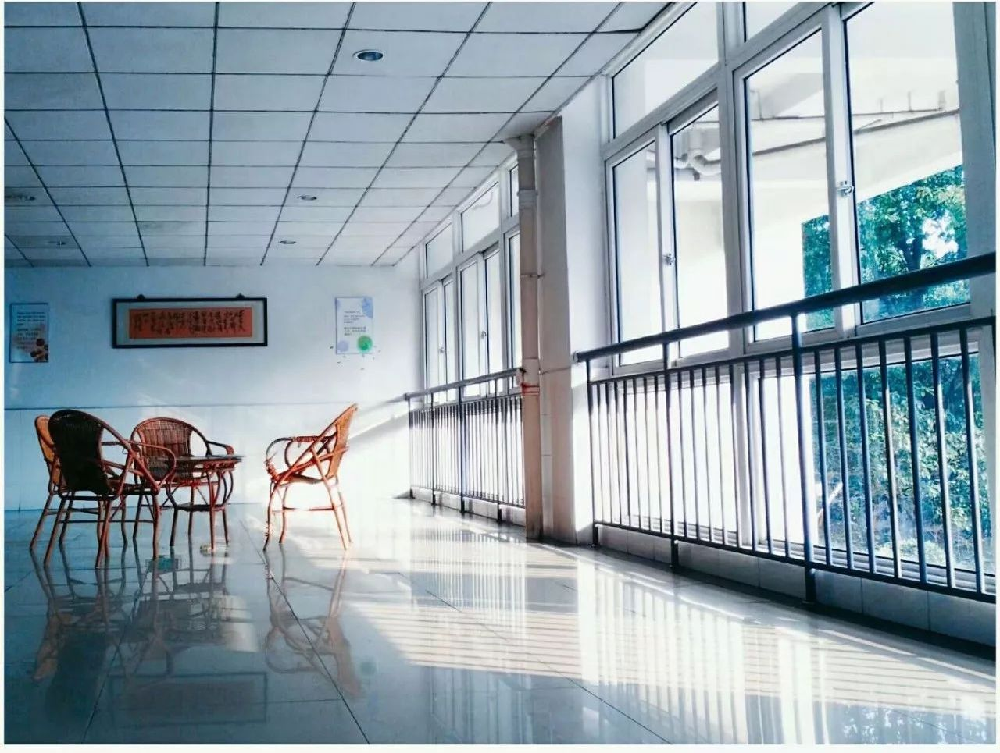
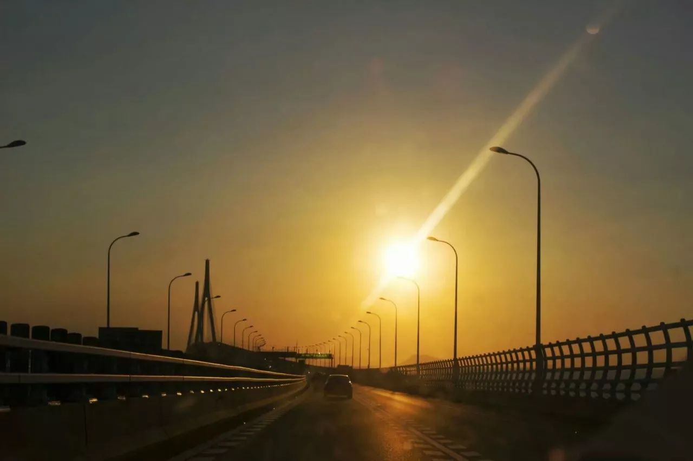
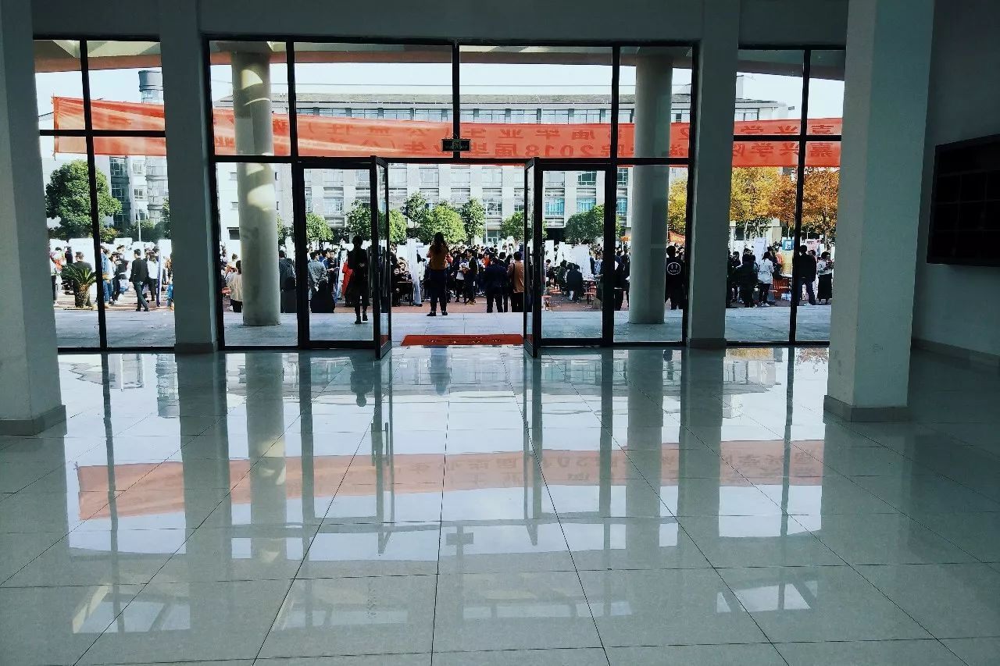

我一直以为，黑夜只有在熄灯后，才会降临。“是有一段日子没断过电了”我对自己说。
初中，我是在学校住宿。那时，隔个半把月就得断电一次，像是有了些规律性。只记得，当时正在教室里自习的我，本聚精会神的写着作业，顿时就黑压压一片了。一时半会，我还没反应过来，耳边便响起着杂七杂八的声音。
“拍打桌子声、呐喊声、还有交谈声，当然，也少不了老师的呵斥声。”他们完美的演绎着一首交响乐，似乎是为了庆祝这一狂欢时刻的到来。一片漆黑中，我睁大了瞳孔，就这样看着他们。
一切都表现的异常兴奋，而我却默默无语。正如朱自清所说：“热闹是他们的，我什么都没有。”
确实，对我来说，这是次罪恶的诞生。“好端端的晚自习就这样流逝了，我的学习怎么办？”所有的结果，被我放大放大，压得喘不过气来，我感到深深的难过。
到了高中，却有些许不同。断电后，学校也用上了发电机。广播里一遍又一遍的播放着“关掉大功率电器，只准照明。”可谁都以为自己所开的一些小电器，不会过分影响大局，就这样，一个接着一个，终于又一次断电了，发电机也无声的叹了口气。
所以说，从本质上讲，这些举措依旧是亡羊补牢。班主任进来时，并没有呵斥安静了，教室里也没有了拍桌子声、呐喊声。似乎我们都懂事了，或者说，不再那么幼稚。
但黑夜，还是使我们兴奋起来，并表现的更高级了些。它成功掩盖了我们的丑陋，自然而然，我们的胆子就大了。请肆无忌惮的开始我们的表演秀。
女生们，披头散发的，装着鬼。男生们，则浑水摸鱼，占占小便宜。他们都可爱极了。这时，热闹依旧是他们的，不过，我不再什么都没有。
我的手里，是有一盏灯的，那也是唯一的一盏灯。只是，并没有人跟我走，打亮它，便显得毫无意义。现在，上了大学，也再也碰不到此类事了。如果，就会有幸，碰到了在上晚自习时断电。
估计，我们也会无动于衷，毕竟，手机还亮着呢！
我们并没有沉入无尽的黑夜中，但尽管这样，我的左眼还是痴了，右眼也呆了。大概是想让我闭上双眼，去倾听黑夜吧。写到最后，至今。那盏灯，我还保留着。“如果，在黑夜里，只有我一人有灯，你会愿意和我走吗？”
